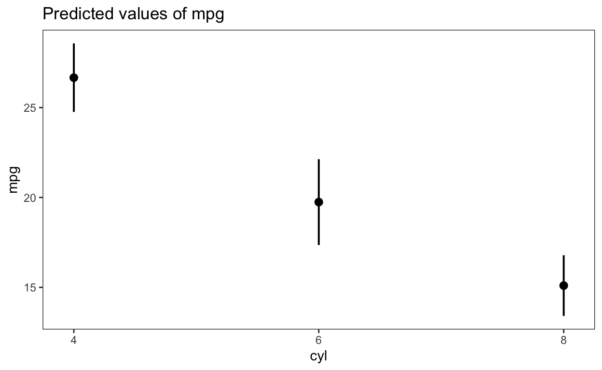

This post as a video
I recommend to watch a video first, because I highlight things I talk about. It’s ca. 14 minutes long.

Why do we need {emmeans}?
Have you ever wondered, why a “summary” function of an omnibus test like ANOVA, tells you that “the number of cylinders” significantly affects “car mileage” without explaining how?
Or have you ever been puzzled why a model compares all categories of a categorical predictor to only the reference category, without comparing categories to each other?
And what about those mysterious slopes with standard errors we get as model coefficients instead of the averages per category with 95% CIs that we actually want?
Moreover, “summary” function doesn’t adjust p-values for multiple comparisons, which increases the probability of discovering nonsense by making too many type-I errors.

Summary function doesn’t plot the results of a model and
makes it almost impossible to interpret interactions!
So, if you’ve ever been frustrated due to similar issues, you’re definitely not alone! The “summary” function doesn’t actually provide a very useful summary, and that’s why we need {emmeans} package, which solves all those problems.
library(tidyverse) # for everything good in R
theme_set(theme_test()) # beautifies plots
library(emmeans) # unleash power of your results!
d <- mtcars %>%
mutate(cyl = factor(cyl),
am = factor(am),
gear = factor(gear))
# omnibus test
aov(mpg ~ cyl, d) %>% summary() Df Sum Sq Mean Sq F value Pr(>F)
cyl 2 824.8 412.4 39.7 4.98e-09 ***
Residuals 29 301.3 10.4
---
Signif. codes: 0 '***' 0.001 '**' 0.01 '*' 0.05 '.' 0.1 ' ' 1
Call:
lm(formula = mpg ~ cyl, data = d)
Residuals:
Min 1Q Median 3Q Max
-5.2636 -1.8357 0.0286 1.3893 7.2364
Coefficients:
Estimate Std. Error t value Pr(>|t|)
(Intercept) 26.6636 0.9718 27.437 < 2e-16 ***
cyl6 -6.9208 1.5583 -4.441 0.000119 ***
cyl8 -11.5636 1.2986 -8.905 8.57e-10 ***
---
Signif. codes: 0 '***' 0.001 '**' 0.01 '*' 0.05 '.' 0.1 ' ' 1
Residual standard error: 3.223 on 29 degrees of freedom
Multiple R-squared: 0.7325, Adjusted R-squared: 0.714
F-statistic: 39.7 on 2 and 29 DF, p-value: 4.979e-09# lm(mpg ~ cyl, d) %>% summary() %>% plot()Even the simplest “emmeans” application provides averages with CIs, compares all categories to each other pair-wisely, adjusts p-values for multiple comparisons and can be easily plotted. And that’s just a beginning, because {emmeans} can do soo much more! But before we unleash the full power of {emmeans} package, we need to …
$emmeans
cyl emmean SE df lower.CL upper.CL
4 26.7 0.972 29 24.7 28.7
6 19.7 1.218 29 17.3 22.2
8 15.1 0.861 29 13.3 16.9
Confidence level used: 0.95
$contrasts
contrast estimate SE df t.ratio p.value
cyl4 - cyl6 6.92 1.56 29 4.441 0.0003
cyl4 - cyl8 11.56 1.30 29 8.905 <.0001
cyl6 - cyl8 4.64 1.49 29 3.112 0.0112
P value adjustment: tukey method for comparing a family of 3 estimates 
Understand what “emmeans” actually stands for
The “emmeans” is an abbreviation for Estimated Marginal MEANS (EMMs).
“estimated” is part of the name, since results are estimated (or predicted) only from models, not from data
the “means” is part of of the name, because the averages themselves are often estimated. However, the term “means” is just a generalization, because for a median-based regression {emmeans} would estimate the marginal medians, while for a logistic regression {emmeans} calculates marginal probabilities. Cool, right?
cyl emmean SE df lower.CL upper.CL
4 26.0 1.872 29 22.2 29.8
6 19.7 0.895 29 17.9 21.5
8 15.2 0.873 29 13.4 17.0
Confidence level used: 0.95 cyl prob SE df asymp.LCL asymp.UCL
4 0.727 0.1343 Inf 0.414 0.910
6 0.429 0.1870 Inf 0.144 0.770
8 0.143 0.0935 Inf 0.036 0.427
Confidence level used: 0.95
Intervals are back-transformed from the logit scale - so, the last part of the name is called “marginal”, which describes a group of values that we want to compute an average for. For a categorical predictor, each category is a “margin”. And for a numeric predictor, an average of that predictor is the “margin”. For example, a marginal mean of “miles per gallon” for 4 cylinders is 26.7, and for 8 cylinders only 15.1, while the average “mpg” will be estimated for an average horsepower of 147.
All margins of a model are combined in a REFERENCE GRID, which is the FOUNDATION for EMMs, because we can estimate the mean at each point in the reference grid, or even define new points of the reference grid we want to estimate the means for. But let’s take it one step at the time, starting with a …
Single categorical predictor
'emmGrid' object with variables:
cyl = 4, 6, 8emmeans(m, pairwise ~ cyl)$emmeans
cyl emmean SE df lower.CL upper.CL
4 26.7 0.972 29 24.7 28.7
6 19.7 1.218 29 17.3 22.2
8 15.1 0.861 29 13.3 16.9
Confidence level used: 0.95
$contrasts
contrast estimate SE df t.ratio p.value
cyl4 - cyl6 6.92 1.56 29 4.441 0.0003
cyl4 - cyl8 11.56 1.30 29 8.905 <.0001
cyl6 - cyl8 4.64 1.49 29 3.112 0.0112
P value adjustment: tukey method for comparing a family of 3 estimates The reference grid of this model shows 3 points we can estimate mean “mpg” for, namely cylinders 4, 6 and 8. The “emmeans” function displays those means with their 95% CIs, compares the mileage of cylinders among each other pair-wisely and adjusts p-values for multiple comparison with a Tukey method by default.
The default method of adjustment can easily be changed thought, which is very useful for several cases. First of all, people might want to use a famous Bonferroni method. However, Bonferroni correction is quite conservative and produces higher p-values as compared to Tukey, which is dangerous, because it increases chances to make a type II error - namely missing a discovery.

Thus, Bonferroni correction is more useful when you have a lot of data. But if you only have a few observations or conduct an exploratory pilot study, you can even stop correcting for multiple comparisons by using, adjust = “none”, argument. I personally prefer Benjamini & Hochberg (1995) method (“BH” or its alias “fdr”) to control the false discovery rate.
emmeans(m, pairwise ~ cyl, adjust = "bonferroni")$contrasts contrast estimate SE df t.ratio p.value
cyl4 - cyl6 6.92 1.56 29 4.441 0.0004
cyl4 - cyl8 11.56 1.30 29 8.905 <.0001
cyl6 - cyl8 4.64 1.49 29 3.112 0.0125
P value adjustment: bonferroni method for 3 tests emmeans(m, pairwise ~ cyl, adjust = "none")$contrasts contrast estimate SE df t.ratio p.value
cyl4 - cyl6 6.92 1.56 29 4.441 0.0001
cyl4 - cyl8 11.56 1.30 29 8.905 <.0001
cyl6 - cyl8 4.64 1.49 29 3.112 0.0042emmeans(m, pairwise ~ cyl, adjust = "BH") # = “fdr”$emmeans
cyl emmean SE df lower.CL upper.CL
4 26.7 0.972 29 24.7 28.7
6 19.7 1.218 29 17.3 22.2
8 15.1 0.861 29 13.3 16.9
Confidence level used: 0.95
$contrasts
contrast estimate SE df t.ratio p.value
cyl4 - cyl6 6.92 1.56 29 4.441 0.0002
cyl4 - cyl8 11.56 1.30 29 8.905 <.0001
cyl6 - cyl8 4.64 1.49 29 3.112 0.0042
P value adjustment: BH method for 3 tests Summary of … summaries ;)
Interestingly, the “emmeans” function shows us 95% CIs of the means, but not of the estimates of contrasts, which are differences between cylinders. On the other hand, the contrasts have p-values which test the null hypothesis that the difference is literally zero, while the “emmeans” section does not test any hypothesis and therefore has no p-values.
We could greatly enhance the output of “emmeans” by using the “infer = TRUE” argument. This produces 95% CIs for the differences among cylinders, which is more useful than the standard error (SE). It also tests the null hypothesis that the means are actually zero. However, testing “emmeans” against zero is not particularly useful – which is why p-values are not usually shown. But it makes a lot more sense to test them against some target mileage, let’s say 14. For that, we can use the “null” argument to set the null hypothesis to 14. This makes cylinder 8, with a mean mileage of 15.1, no longer significantly different from our new null hypothesis. The “pairwise” argument is removed, because otherwise the contrasts would also have been tested against 14.
emmeans(m, pairwise ~ cyl, infer = T)$emmeans
cyl emmean SE df lower.CL upper.CL t.ratio p.value
4 26.7 0.972 29 24.7 28.7 27.437 <.0001
6 19.7 1.218 29 17.3 22.2 16.206 <.0001
8 15.1 0.861 29 13.3 16.9 17.529 <.0001
Confidence level used: 0.95
$contrasts
contrast estimate SE df lower.CL upper.CL t.ratio p.value
cyl4 - cyl6 6.92 1.56 29 3.072 10.77 4.441 0.0003
cyl4 - cyl8 11.56 1.30 29 8.356 14.77 8.905 <.0001
cyl6 - cyl8 4.64 1.49 29 0.958 8.33 3.112 0.0112
Confidence level used: 0.95
Conf-level adjustment: tukey method for comparing a family of 3 estimates
P value adjustment: tukey method for comparing a family of 3 estimates emmeans(m, ~ cyl, infer = T, null = 14, adjust = "mvt") cyl emmean SE df lower.CL upper.CL null t.ratio p.value
4 26.7 0.972 29 24.2 29.1 14 13.031 <.0001
6 19.7 1.218 29 16.7 22.8 14 4.714 0.0002
8 15.1 0.861 29 12.9 17.3 14 1.277 0.5018
Confidence level used: 0.95
Conf-level adjustment: mvt method for 3 estimates
P value adjustment: mvt method for 3 tests As you can see, the “emmeans” function does a great job of summarizing all the important results, while the “summary” function misses most of them. We can even go in the opposite direction and summarize the “emmeans” results themselves to include only the most essential information. For that we’ll use the Pairwise P-value matrix (“pwpm”) function, which presents results from “emmeans” and pairwise comparisons thereof in a most compact way, where:
- the upper triangle displays the “Tukey” adjusted P values,
- the diagonal shows the Estimates (EMMs), and
- the lower triangle compares the estimates between levels.
In this way, rarely used information such as “df” or “t.ratios” is left out.
4 6 8
4 [26.7] 0.0003 <.0001
6 6.92 [19.7] 0.0112
8 11.56 4.64 [15.1]
Row and column labels: cyl
Upper triangle: P values adjust = "tukey"
Diagonal: [Estimates] (emmean)
Lower triangle: Comparisons (estimate) earlier vs. laterAnother advantage of “emmeans” over “summary” function is that we can easily plot our estimates with their 95% confidence intervals by using a “plot” command. (The 95% confidence intervals are the default, but you can change them with “level” argument, if you want to.) But the advantages of using “emmeans” over “summary” doesn’t stop there. The benefits are even more pronounced if we analyze numeric predictors or covariates.


Single numeric predictor + altering the reference grid
Namely, instead of just looking at the average 20 miles per gallon for a boring average car (as represented by the mean “horsepower” of 147), we can estimate “mileages per gallon” for weak (imagine a baby car) and muscle cars (imagine a muscle car and a engine noise)? To do this, we’ll reduce our covariate to only the range of “horsepower”, from 52 to 335, which gives us a much more informative and less boring look at fuel efficiency. Particularly, weak cars drive further and strong cars drive much less than the average 20 miles per gallon.
hp emmean SE df lower.CL upper.CL
147 20.1 0.683 30 18.7 21.5
Confidence level used: 0.95 emmeans(m, ~ hp, cov.reduce = range) hp emmean SE df lower.CL upper.CL
52 26.55 1.18 30 24.15 29.0
335 7.24 2.02 30 3.11 11.4
Confidence level used: 0.95 Moreover, we can specify any particular values of a numeric predictor, which might be useful when we have a non-linear relationship, but still need to figure out the efficiency of cars at different values of horsepower.
m1 <- lm(mpg ~ poly(hp, 2), d)
library(sjPlot) # I made a video on this 📦
plot_model(m1, type = "pred", show.data = T)$hp
Let’s use 100, 200, and 300 “horsepowers” and not only plot the estimates, but also compare them statistically by using the “comparisons = TRUE” argument. The blue bars represent the 95% confidence intervals for the EMMs, and the red arrows show statistical comparisons among them. If an arrow from one mean overlaps with an arrow from another mean, the difference is not significant.

Speaking of significance: if we want to see the exact p-values for pairwise comparisons among the different “horsepowers,” we again can add the “pairwise” argument in front of the tilde (~) and see that after crossing the 200 horsepower threshold, the mileage doesn’t significant change anymore, but stays at around 14.5 miles.
$emmeans
hp emmean SE df lower.CL upper.CL
100 23.3 0.662 29 21.9 24.6
200 14.6 0.820 29 12.9 16.3
300 14.3 1.735 29 10.7 17.8
Confidence level used: 0.95
$contrasts
contrast estimate SE df t.ratio p.value
hp100 - hp200 8.71 0.919 29 9.477 <.0001
hp100 - hp300 9.00 1.945 29 4.626 0.0002
hp200 - hp300 0.29 1.728 29 0.168 0.9846
P value adjustment: tukey method for comparing a family of 3 estimates Now, having learned what “emmeans” does with one categorical and one numeric predictors, let’s figure out what happens if we have both in a multiple model.
One categorical + One numeric predictors
In models that include covariates, EMMs are often referred to as adjusted means. For example, consider a scenario where we want to understand the effect of profession on salary. We might include age as a covariate in our model because salary certainly changes over the lifetime. By holding age constant at its average, we are controlling for the influence of age and are able to better understand the unique effect of profession on salary and make more accurate predictions.
If you wonder whether we really need any covariate at all, you can compare the Akaike’s Information Criterion (AIC) of a model with, to the model without this covariate. The lower AIC of the model with age indicates that the covariate improves the model and thus makes predictions of salary by profession indeed more realistic.
library(ISLR)
set.seed(10) # for reproducibility
salary <- Wage %>%
group_by(jobclass) %>%
sample_n(50)
m_no_age <- lm(wage ~ jobclass, salary)
m <- lm(wage ~ jobclass + age, salary)
AIC(m, m_no_age) df AIC
m 4 1014.413
m_no_age 3 1020.342The average age of 41.39 years shows that industrial workers earn slightly below 100K, while the IT crowd earns over 116K, which is already a first insight into our question. However, we can go one step further and ask “emmeans” to provide salary estimates for different ages in order to see how strongly salary increases over a lifetime for different professions.
ref_grid(m)'emmGrid' object with variables:
jobclass = 1. Industrial, 2. Information
age = 41.39emmeans(m, ~ jobclass) jobclass emmean SE df lower.CL upper.CL
1. Industrial 99.9 5.33 97 89.4 111
2. Information 116.4 5.33 97 105.8 127
Confidence level used: 0.95 For instance, if people start working at 25 and finish working at 65 years old, we will see that IT professionals receive a salary of over 100K already at the beginning of their career at the age of 25, while factory workers only reach that 100K mark by the age of 42.
jobclass = 1. Industrial:
age emmean SE df lower.CL upper.CL
25 85 7.33 97 70.4 99.5
42 100 5.34 97 89.9 111.1
65 121 9.49 97 102.6 140.3
jobclass = 2. Information:
age emmean SE df lower.CL upper.CL
25 101 7.67 97 86.2 116.6
42 117 5.32 97 106.3 127.5
65 138 9.09 97 119.8 155.9
Confidence level used: 0.95 Two categorical predictors
'emmGrid' object with variables:
am = 0, 1
cyl = 4, 6, 8emmeans(m, pairwise ~ cyl)$emmeans
cyl emmean SE df lower.CL upper.CL
4 26.1 0.972 28 24.1 28.1
6 19.9 1.165 28 17.5 22.3
8 16.0 0.943 28 14.1 17.9
Results are averaged over the levels of: am
Confidence level used: 0.95
$contrasts
contrast estimate SE df t.ratio p.value
cyl4 - cyl6 6.16 1.54 28 4.009 0.0012
cyl4 - cyl8 10.07 1.45 28 6.933 <.0001
cyl6 - cyl8 3.91 1.47 28 2.660 0.0331
Results are averaged over the levels of: am
P value adjustment: tukey method for comparing a family of 3 estimates The model with two categorical predictors works a little differently. If we examine the estimated marginal means (EMMs) of cylinders while adjusting for automatic transmission, the “emmeans” command indicates that the results are somehow averaged over the levels of the variable “am”. I was initially unsure of what this meant, so I calculated the means of cylinders separately for transmission 0 and 1 using “by” argument and averaged them to get the same EMMs we obtained initially.
- (24.8 + 27.4) / 2 = 26.1
- (18.6 + 21.2) / 2 = 19.9
- (14.7 + 17.3) / 2 = 16
Oh, by the way, if you want to display the sample size of every level, use calc = c(n = ".wgt.") argument ;)
am = 0:
cyl emmean SE df n lower.CL upper.CL
4 24.8 1.323 28 3 22.1 27.5
6 18.6 1.288 28 4 16.0 21.3
8 14.7 0.842 28 12 13.0 16.5
am = 1:
cyl emmean SE df n lower.CL upper.CL
4 27.4 0.992 28 8 25.3 29.4
6 21.2 1.378 28 3 18.4 24.0
8 17.3 1.383 28 2 14.5 20.1
Confidence level used: 0.95 So, in the case of a numeric covariate, “emmeans” are estimated for the mean of the covariate. However, for a categorical covariate, “emmeans” calculates the averages for each category and then takes the average of the estimated marginal means over the categories.
But what happens if we have two numeric predictors?
Two numeric predictors
To answer this question, let’s consider the horsepower and weight of cars in the same model. The reference grid tells us that the mileage will be calculated only for the averages of predictors, which is somewhat boring. However, using the “cov.reduce” argument we learned about today, we can tell a more interesting story that is already part of the model but would have gone untold if we had only used the “summary” function. In particular, weak (52 horsepower) and light (1.52 weight) cars are the most efficient, as they can drive the most distance (nearly 30 miles per gallon of fuel). If a weak car is heavy (5.42 weight), it can only manage to drive 14.5 miles, which is less than a light but sporty muscle car (335 horsepower) with a mileage of 20 miles per gallon. The most inefficient cars, however, are strong and heavy, which can only manage 5.5 miles per gallon, so you’ll never pass a gas station.
'emmGrid' object with variables:
hp = 146.69
wt = 3.2172emmeans(m, ~ wt | hp, cov.reduce = range)hp = 52:
wt emmean SE df lower.CL upper.CL
1.51 29.71 0.943 29 27.78 31.64
5.42 14.54 2.113 29 10.22 18.86
hp = 335:
wt emmean SE df lower.CL upper.CL
1.51 20.72 2.585 29 15.43 26.00
5.42 5.55 1.387 29 2.71 8.39
Confidence level used: 0.95 Plotting the results supports our conclusion that increasing the strength and weight of cars decreases their efficiency. The only thing we would need to be absolutely sure of our finding is the p-values. However, if we use the “pairwise” argument in front of the tilde (~) to get contrasts between values, we oddly get identical results for different horsepower levels. This happens because in a multiple model without interactions we can only adjust the effect of one predictor, such as weight, while the other predictors are held constant and do not change or vary.
plot_model(m, type = "pred", terms = c("wt", "hp [52, 335]"))
$emmeans
hp = 52:
wt emmean SE df lower.CL upper.CL
1.51 29.71 0.943 29 27.78 31.64
5.42 14.54 2.113 29 10.22 18.86
hp = 335:
wt emmean SE df lower.CL upper.CL
1.51 20.72 2.585 29 15.43 26.00
5.42 5.55 1.387 29 2.71 8.39
Confidence level used: 0.95
$contrasts
hp = 52:
contrast estimate SE df t.ratio p.value
wt1.513 - wt5.424 15.2 2.47 29 6.129 <.0001
hp = 335:
contrast estimate SE df t.ratio p.value
wt1.513 - wt5.424 15.2 2.47 29 6.129 <.0001However, when we introduce interactions, things dramatically improve, because we can calculate EMMs for every level of one predictor within every level of the other predictor, and we can easily obtain contrasts between levels with unique p-values. This, however, is a completely different story, because analyzing interactions can be very challenging, but at the same time, it is extremely rewarding because it allows us to extract even more valuable knowledge from models. Thus, if you want to step up your data science game and unleash the real power of {emmeans}, you should definitely watch this video!
$emmeans
hp = 52:
wt emmean SE df lower.CL upper.CL
1.51 33.32 1.24 28 30.78 35.9
5.42 6.85 2.70 28 1.33 12.4
hp = 335:
wt emmean SE df lower.CL upper.CL
1.51 11.26 3.31 28 4.48 18.0
5.42 15.61 2.92 28 9.63 21.6
Confidence level used: 0.95
$contrasts
hp = 52:
contrast estimate SE df t.ratio p.value
wt1.513 - wt5.424 26.47 3.65 28 7.261 <.0001
hp = 335:
contrast estimate SE df t.ratio p.value
wt1.513 - wt5.424 -4.35 5.59 28 -0.778 0.4430What’s next? … Interactions!


Some bonus content
“Cohen’s d” Effect sizes
- you must specify the “emmGrid” object with the means to be compared, the estimated population SD sigma of the model, and its degrees of freedom “edf”:
contrast effect.size SE df lower.CL upper.CL
cyl4 - cyl6 1.86 0.566 26 0.698 3.02
cyl4 - cyl8 3.38 0.677 26 1.993 4.78
cyl6 - cyl8 1.52 0.576 26 0.340 2.71
Results are averaged over the levels of: am
sigma used for effect sizes: 3.032
Confidence level used: 0.95 If you think, I missed something, please comment on it, and I’ll improve this tutorial.
Thank you for learning!